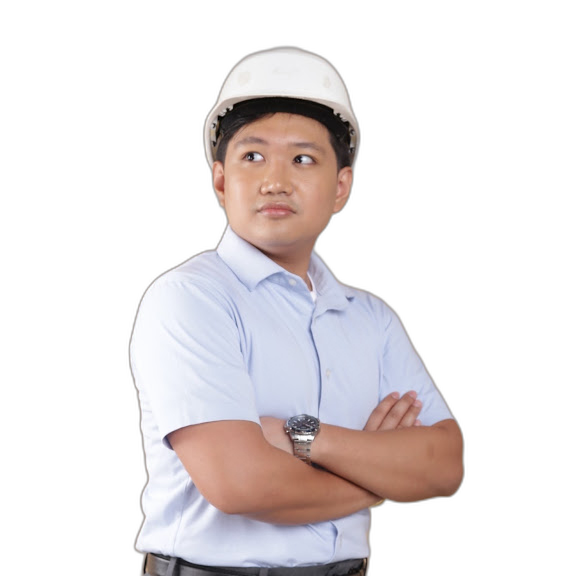
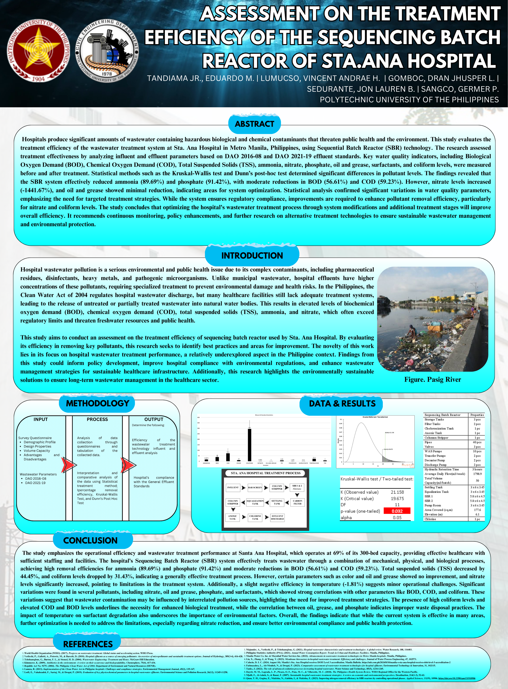
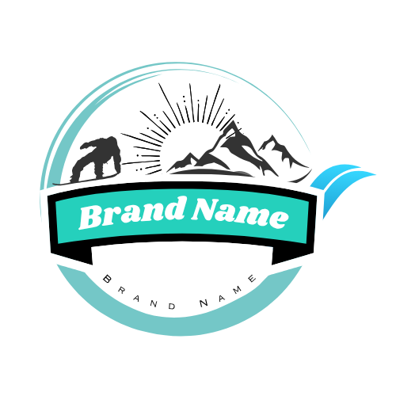
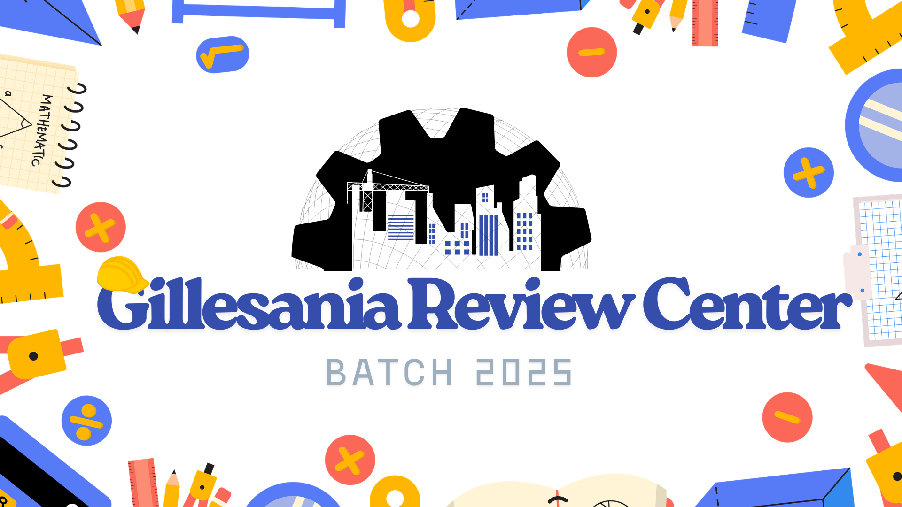
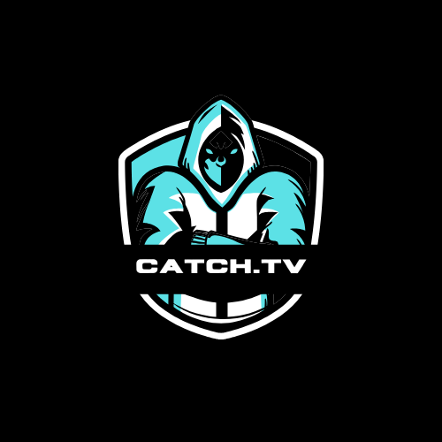
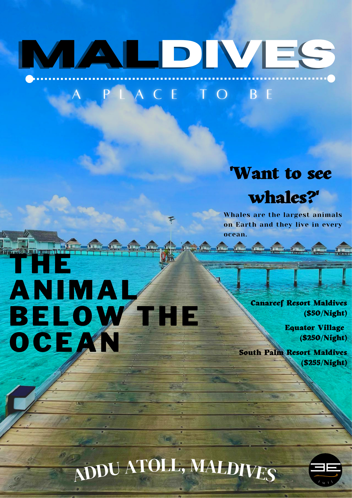
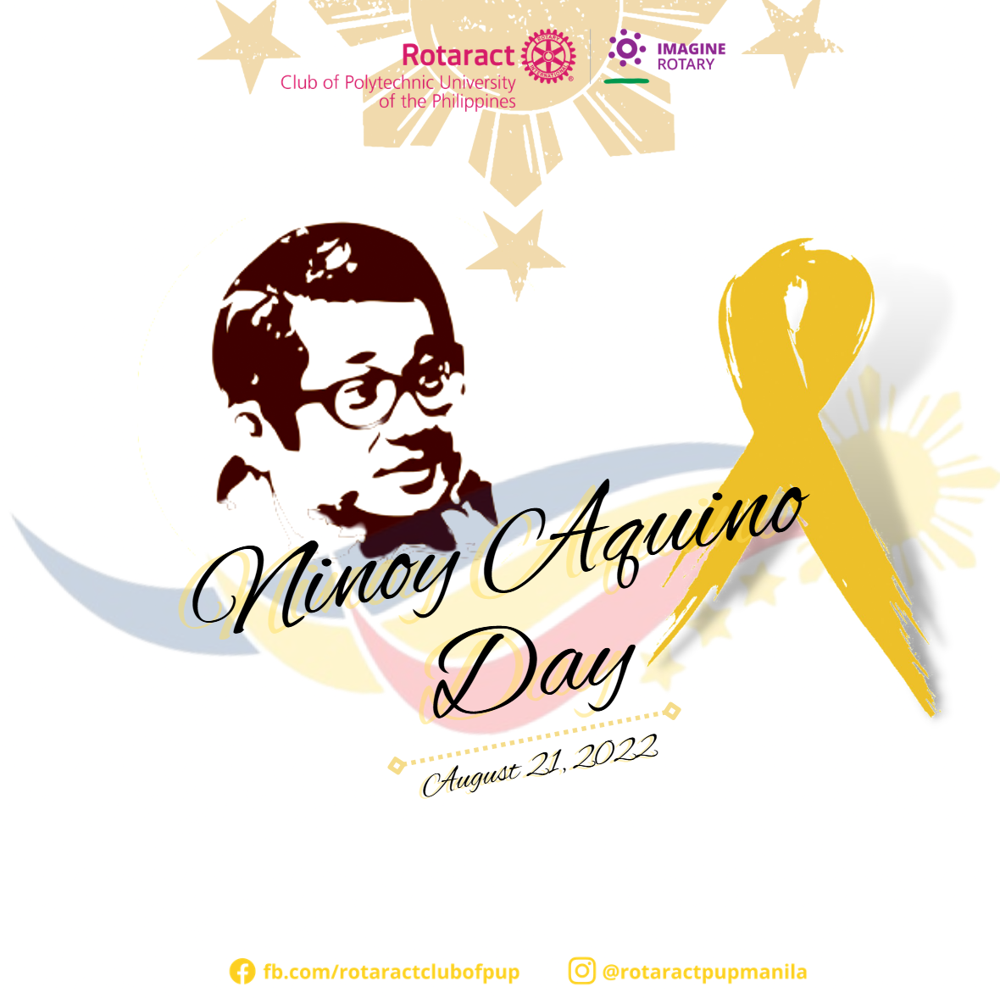

Design in the field / 01—08
01 / Construction portfolio
Design in the field
Rebar checks · Concrete work · Site documentation
I’m focused on structural layouts, water-resource systems, construction operations, and the details that make projects buildable.

Construction documentation, fieldwork, visual communication, and structural systems collected in one portfolio view.
Rebar checks · Concrete work · Site documentation

Water-resource engineering · Technical presentation
Reinforced-concrete cistern and stormwater management tank layouts developed in AutoCAD, with plans, sections, and slab reinforcement schedules.
Open CAD sample ↗My work combines engineering documentation with practical construction coordination: reviewing drawings, checking quantities, tracking progress, and turning site concerns into clear next steps.
Graduate of Civil Engineering from the Polytechnic University of the Philippines, Manila, majoring in Water Resource Engineering. I bring together structural documentation, construction operations, estimation support, and practical site coordination.
View full CV ↗Construction operations, structural layouts, and project coordination.
High-rise construction site support at The Paddington, Shaw Boulevard.
Selected engineering and creative work across water-resource systems, construction documentation, quantity estimation, visual communication, and research.
Selected logos, campaign graphics, posters, and research visuals. A separate creative practice that supports communication and presentation.




